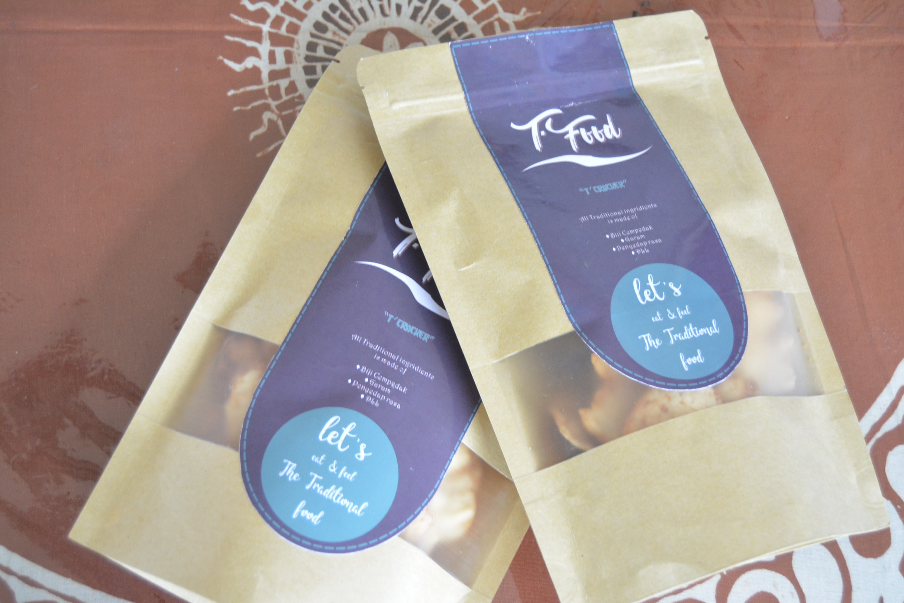
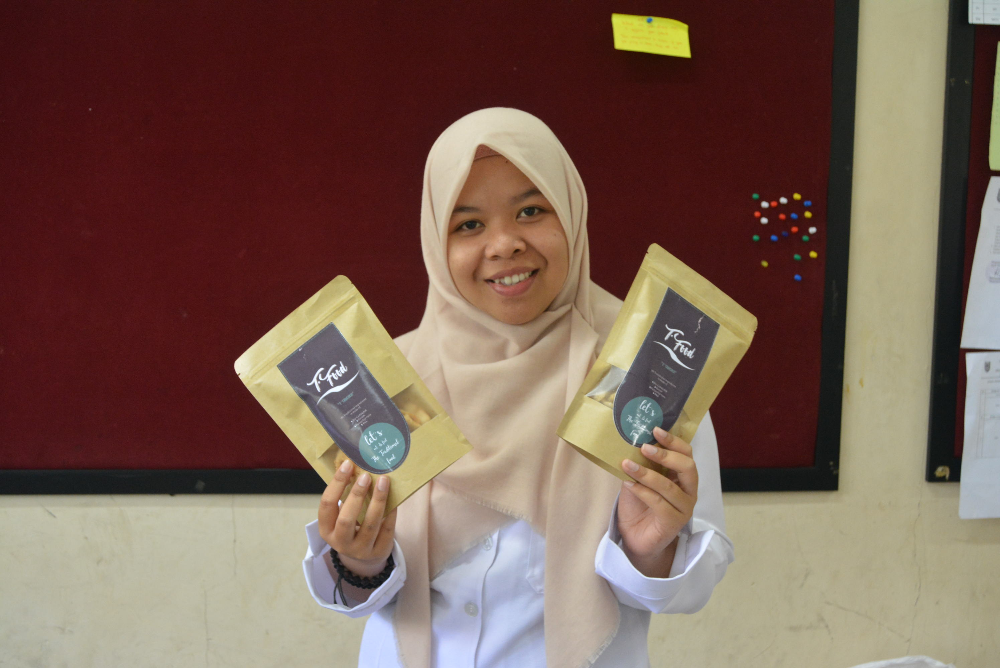
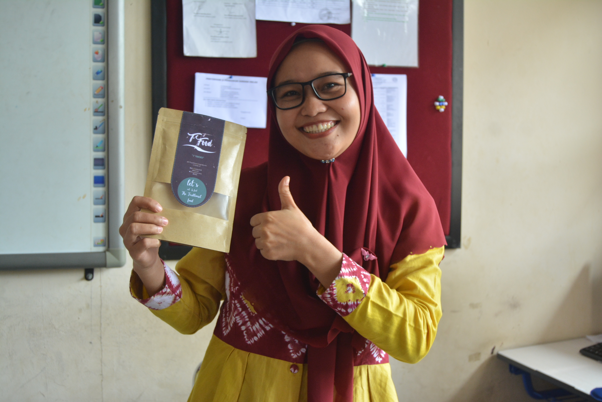
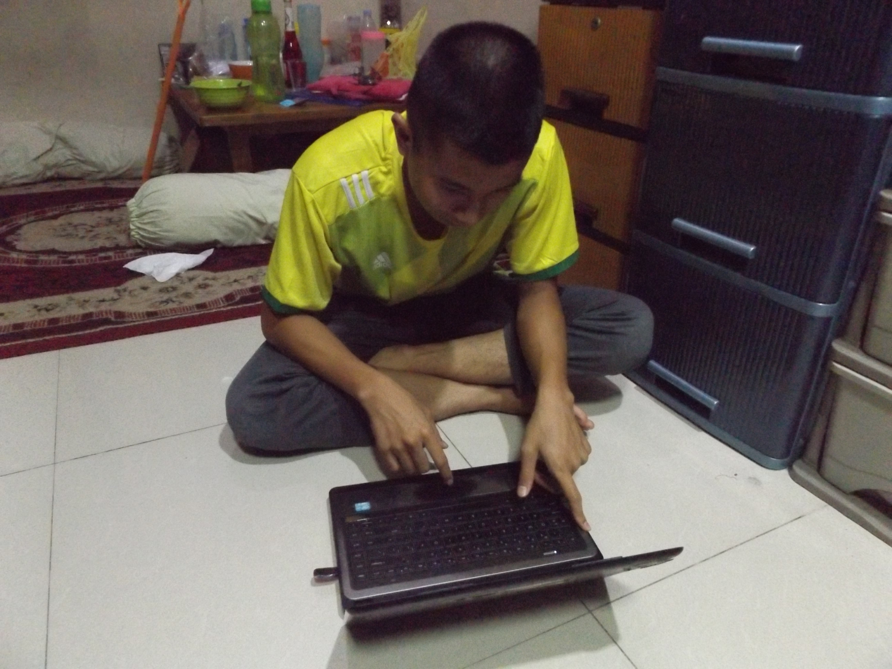
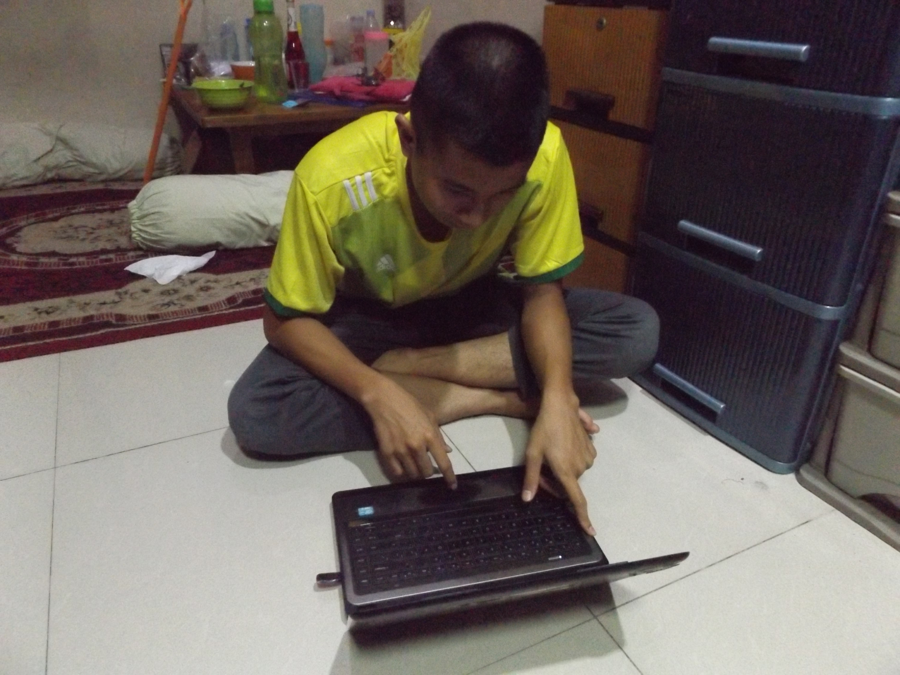

Profile
T'FOOD menciptakan sebuah inovasi makanan dengan menggunakan buah-buahan lokal. Kami membuat T'Cracker dengan menggunakan bahan dasar biji tiwadak.
Biji tiwadak biasanya hanya sisa namun kami berupaya mengubahnya menjadi makanan yang mempunyai cita rasa tinggi. Biji tiwadak yang tidak mempunyai harga kami kembangkan sehingga mempunyai daya jual yang tinggi
"Make The Traditional To Be International"
Product
"T'Cracker"
BAHAN:
1. Biji cempedak 1kg
2. Tepung sagu 1kg
3. Bawang putih 1ons
4. Garam
5. Bumbu penyedap
6. air hangat
PENGOLAHAN
1. Bersihkan biji cempedak.
2. Rebus biji cempedak sampai matang, jika sudah matang, angkat dan tiriskan biji cempedak, kupas kulit biji cempedak lalu haluskan dengan menggunakan blender.
3. Campurkan biji cempedak yang sudah halus tadi dengan bahan-bahan diatas seperti tepung sagu, bawang putih, dan garam, lalu aduk sampai merata.
4. Setelah itu giling adonan hingga pipih sekitar 0,5 cm. Setelah menjadi pipih, buatlah adonan bulat memanjang, panjangnya per satu jengkal.
5. Kukus selama 30 menit.
6. Setelah dikukus, angkat dan dinginkan untuk dipotong menjadi tipis-tipis.
7. Jemur kerupuk biji cempedak tersebut sampai kering.
8. Bila sudah benar-benar kering, kerupuk biji cempedak siap digoreng dengan minyak panas.
9. Setelah digoreng, minyak ditiriskan hingga benar-benar kering.
10. Kita dapat menambahkan berbagai varian perasa tergantung rasa yang akan diolah.
Our Team
Kami merupakan alumni SMAN BANUA KALSEL lulusan tahun 2021. Disanalah tim ini terbentuk, atas bimbingan guru-guru kami. Dengan disertai tekad yang kuat kami mengikuti seleksi perlombaan FIKSI 2020. Maka terciptalah sebuah inovasi produk makanan dengan menggunakan bahan dasar buah-buahan lokal.
Abdun
Fahreza
Fikri
Documentation
Dokumentasi selama pengerjaan prototype
Prototype
Testimoni
 Proses Pengerjaan
 
